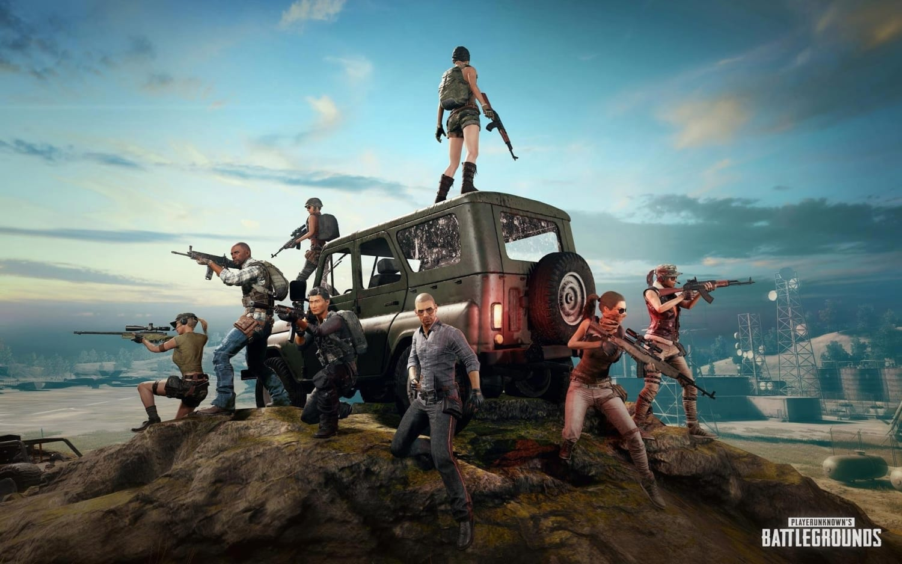
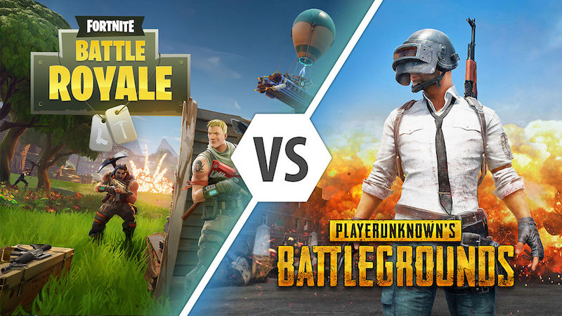
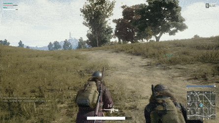

PlayerUnknown's Battlegrounds
Introduction
PlayerUnkown's Battlegrounds is an online multiplayer battle royale game developed and published by PUBG Corporation (a subsidiary of Bluehole) in 2017.
|  |
| How did they all fit inside the Jeep? |
Many consider it to be the game that brought the battle royale genre to the mainstream. The game is based on previous mods designs created by Brendan Greene, who use to go by PlayerUnknown, for DayZ (itself a mod of ARMA 2) called DayZ: Battle Royale (2013).
Said mods were in turn inspired by the Japanese film, Battle Royale, released in 2000.
Gameplay
The match starts with all the players parachuting down from a plane onto an island. The plane's flight path above the map changes every round, which means that the players have to quickly figure out when it would be best to jump out every round. All the players start the round with no equipment other than the parachute they just used and cosmetic items that don't affect gameplay.
 |
| Enjoy some peace and quiet before all the murdering. |
Once they've hit the ground, the players have to run around the map and search buildings, ghost towns, and other locations in order to find weapons, armor, vehicles, and other stuff. The aforementioned items are randomly scattered around the map at the start of the match. Better equipment can be found in some high-risk zones. Players can also acquire equipment from the bodies of other players.
Players can choose whether they'd rather play in the first-person or third-person perspective. Both have their own advantages and disadvantages when it comes to combat and situational awareness.
 |
 |
| First-person perspective. | Third-person perspective (great aim btw). |
To create conflict and ensure that players collide with each other (and then murder each other), the safe area will shrink on a regular basis. This happens every few minutes and to add to the chaos, the safe area will shrink down towards a random location. The players caught outside the safe area will take damage and will die if they stay outside for too long. Other random events have crates of loot dropped onto a map, with items unobtainable on the map, and random bombings, where a plane will fly over an area and drop bombs. A round typically lasts less than 30 minutes.
Development
As mentioned before the game is based on mods created by Greene for DayZ and inspired by the Japanese film, Battle Royale. Greene wanted to create a multiplayer fps that had more random elements so that players couldn't just memorize maps and would instead constantly be one their toes. This would make the game more fun and replayable. Greene achieved this by having the maps be quite big and weapons randomly spread out around it. Players would also have to keep an eye on the map, as it would shrink regularly.
DayZ eventually became its own standalone title, and interest in Greene's ARMA 2 version of the Battle Royale mod declined. Brendan kept working on his mods until he was recruited by Bluehole (a South Korean company) to develop a standalone game revolving around the battle royale gameplay he had created in his mods. Development started in early 2016 and was followed by a public announcement in June, the idea at the time being to then release the game before the end of the year. The game ended up being released in 2017 on Xbox One, PS4, and PC after some time in beta. The game was then also released on mobile devices.
Impact
Battlegrounds is considered the defining battle royale game due to its popularity. Despite the fact that other games, including Greene's previous mods, existed long before PlayerUnkown's Battlegrounds, none of them managed to pierce into the mainstream like PUBG did.
Many battle royale games and game modes started appearing afterwards, but the most notable game to have been created in light of PUBG is Epic Games' Fortnite. While they had been working on the game, the addition of battle royale came later. Fortnite's most notable difference is the players the ability to construct fortifications, this was the feature that existed prior to the battle royale trend becoming popular. Released in September 2017, Fortnite Battle Royale was its own standalone free-to-play game. The game became very popular and eventually overshadowed PUBG. It's worth mentioning that despite this the game is still quite popular.
 |
 |  |
| Fortnite. | The two biggest battle royale games. | PlayerUnkown's Battlegrounds. |
Greene has expressed concern about the large number of games that have just cloned the Battleground mechanics, without adding anything to the game. In China, clones of PUBG have become their own new genre of "chicken-eating game" (this is a reference to the "winner winner chicken dinner" line that appears on the screen of the winner in PUBG). Greene said
"I want this genre of games to grow. For that to happen you need new and interesting spins on the game mode. If it's just copycats down the line, then the genre doesn't grow and people get bored."Arthur Morgan